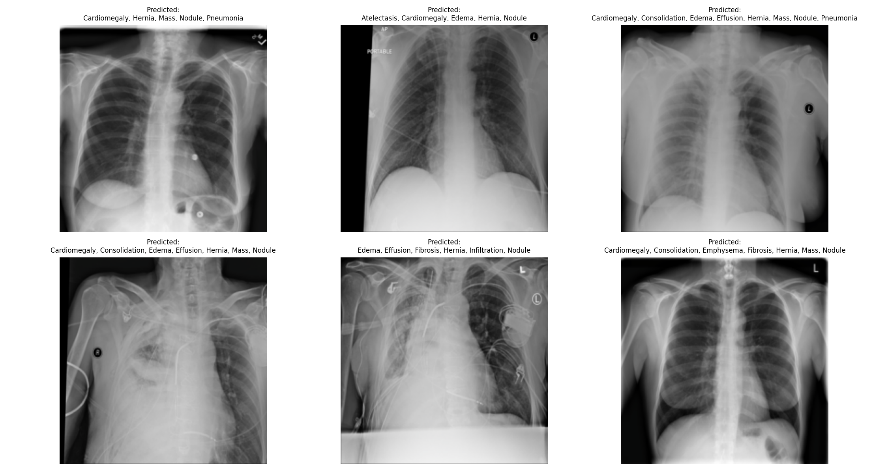
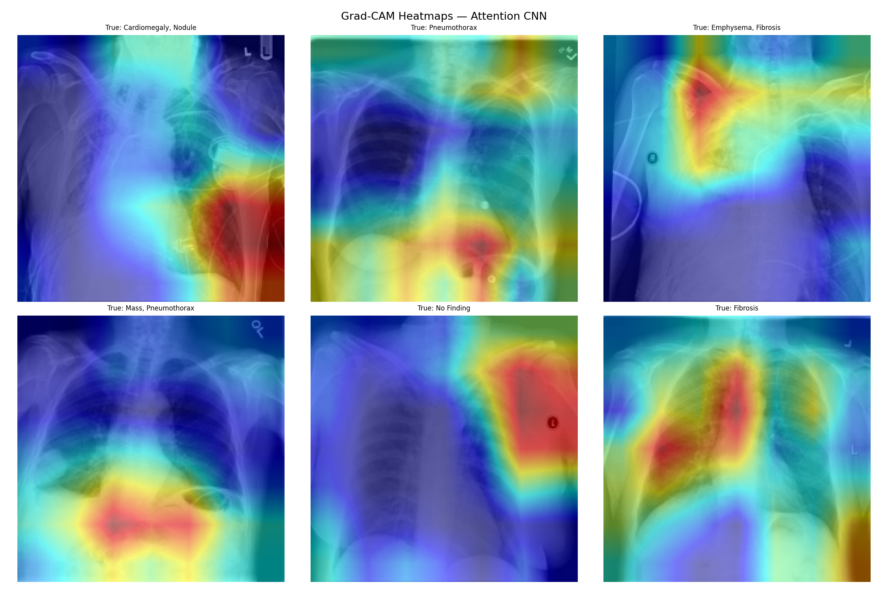

AI Explainability (Grad-CAM)
To bridge the gap between AI and medical practitioners, the model utilizes Gradient-weighted Class Activation Mapping (Grad-CAM) to generate attention heatmaps. This visualizes exactly which anatomical regions the neural network emphasized when diagnosing the pathology.

Ground Truth vs Predictions
Sample grid of chest X-rays plotting the true pathological labels against the Neural Network's highest confidence probability outputs.

Attention Mapping (Heatmaps)
Red overlays indicate areas of maximum convolutional activation, proving the model correctly attends to lung opacities, heart borders, and pleural fluid.
Interactive: Dynamic AI Diagnosis
Click below to securely pick a random unseen patient image from the chest X-ray repository and run an instant inference via the Dual Attention DenseNet architecture in the background.